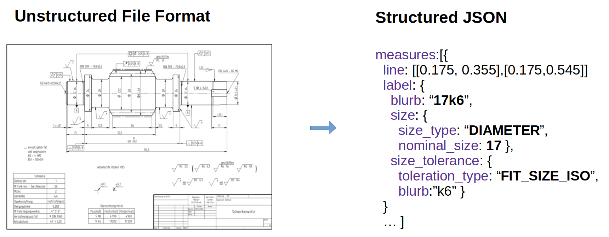

Werk24 Documentation¶
Welcome to the Werk24 documentation! The following pages give you an overview on how to use our Technical Drawing Reading Services.
Our Cloud service allows you to extract structured JSON data from Technical Drawings in unstructured File Formats like PDF, PNG, JPEG, TIFF and others.

Clients¶
To make your life as easy as possible, we offer a Command Line Interfaces, as well as clients for python and nodejs.
|
|

|
If you need to use our API in a different language, please reach out to us at info@werk24.biz.
Installation¶
For your convenience, we are distributing the clients through PyPi and npmjs.
pip install werk24
npm install werk24
Send your first request¶
To get all measures of (all variants) indicated on your drawing, you would pass an W24AskVariantMeasures instance along with the drawing bytes.
import asyncio
from werk24 import Hook, W24TechreadClient, W24AskVariantMeasures
async def print_measures_of_drawing(drawing_bytes):
hooks = [Hook(ask=W24AskVariantMeasures(), function=print)]
async with W24TechreadClient.make_from_env() as session:
await session.read_drawing_with_hooks(document_bytes,hooks)
asyncio.run_until_complete(print_measures_of_drawing(...))
async def printMeasuresOfDrawing(drawingBytes) {
const askLib = await werk24.loadAsks();
const hooks = [new werk24.Hook(new askLib.W24AskVariantMeasures(), console.log)];
let client = werk24.W24TechreadClient.makeFromEnv();
try { await client.readDrawingWithHooks(drawingBytes, hooks);}
catch (e) { console.error(e); } finally { client.close(); }
}
printMeasuresOfDrawing(...)
License File¶
Reach out to us at info@werk24.biz to obtain your license file.